iOS design criteria
This guide aims to present the different accessibility criteria to create an accessible iOS application.
Each criterion explains for whom it is important, when it can be implemented, why it is important and the corresponding accessibility rule.
When designing your app, keep text size, weight, and layout in mind for clarity and readability.WWDC 2020 - Make Your App Visually Accessible (watch the video)
Images #
Textual alternative for users who cannot access to image information.
Blocking point: an image without textual description is unusable by people with visual impairments or those that cannot display images.
Target: everyone, especially people with visual impairments.
When: as of design and during development.
In case of an image containing text, this text will be used for the alternative.
In case of an image that provides information as a graph, drawing or other, the alternative will contain all necessary information in the image.
Some images are used for decorative purposes and do not require alternatives.
The alternative of an image is set via the accessibilityLabel attribute (using the UIAccessibility protocol available on any children of UIView).
-
Images with information must convey this information through their text alternative.
-
Decorative images have no alternative text.
Colours #
Target: everyone, especially people with visual impairments, elderly people and people with vision problems (colour blindness, vision contrasts...).
When: as of the design phase and during development.
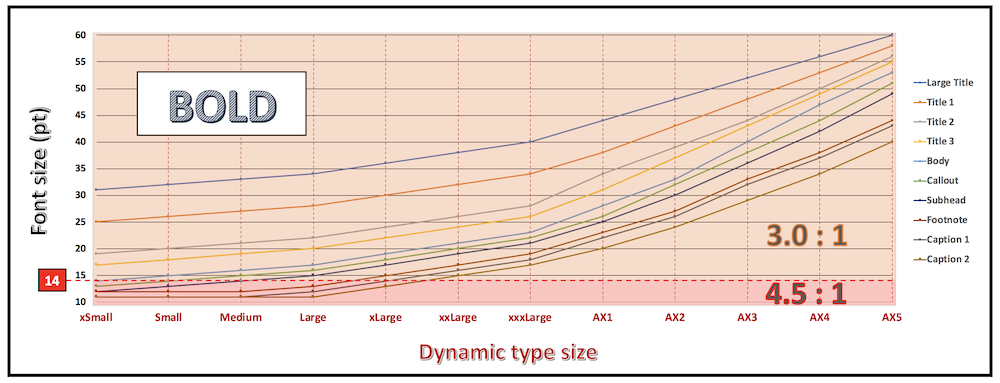
The normal font type will require a higher contrast than the previous case.
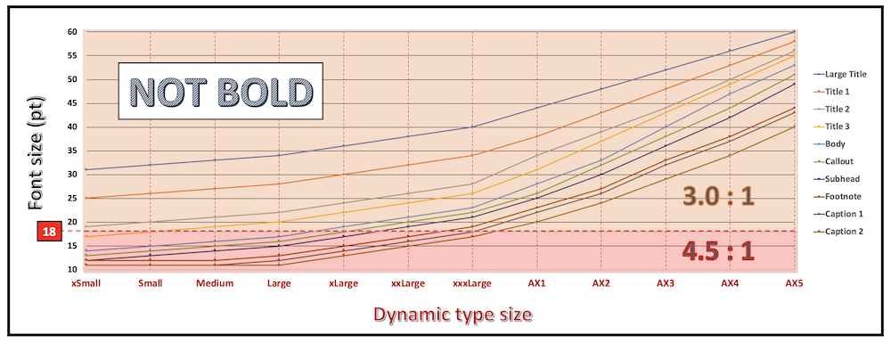
With Dynamic Type whose purpose is to adapt the font size according to the user settings, the contrast isn't necessary fixed and must be adapted to the text size.
Abide by the contrast ratio is crucial but a too high contrast accentuates eye strain and may cause a visual sensation of blurring on the text.
For light sensitive persons, a pure black text on a pure white background may significantly make the halo effect appear that will force to squint to read.
However, to substantially improve the legibility, it's still better and highly recommended to write dark text on a light background (text with a positive contrast).
In order to deliver an optimal user experience in accessibility, it's mandatory to take into account the following two additional colorimetric characteristics:
- Brightness difference (value > 125).
- Colour difference (value > 500).
These two elements propose to the greatest number a very comfortable reading that the contrast unfortunately can't assure on its own (see the end of this section to discover the proper tool for automatic calculations).
Choosing the appropriate colours finally amounts to checking each and every constraint previously exposed for:
- The contrast.
- The brightness difference.
- The colour difference.
Adding different forms to differentiate the information provided only by colours may unnecessarily overlay the graphic interface if the user doesn't need them.

In this case, the accessibility option will allow this display only at the user's demand.
Tools:
-
The Colour Contrast Analyser application (version 2.3) can quickly measure colour contrast levels (free for Windows and Mac).

-
The Accessibility Inspector tool provides a specific Color Contrast Calculator feature that reaches the same purpose since Xcode 11.
Example of invalid contrast
The label “film | 8:40 PM…” does not have enough contrast and will not be readable by all users.

Example of information conveyed through valid and invalid colour:
-
Do not use colour as the only way of conveying information, indicating an action, requesting a response or distinguishing an element.
-
The contrast between the colour of the background and the text must be appropriate (can be measured with the Colour Contrast Analyser tool or with the Color Contrast Calculator feature of Accessibility Inspector since Xcode 11).
-
With the Dark Mode since iOS 13, special attention must be paid to the contrasts used in the different themes and that can be modified with the accessibility option.
-
The detailed summary of the WWDC 2020 video entitled Make Your App Visually Accessible is a perfect start to follow the appropriate instructions (especially the section 'COLOR & SHAPES' - 'Contrast').
Alternative text #
Target: everyone, especially people with visual impairments.
When: as of design, content writing and during development.
As for images, it is important to add a text alternative when information is not available for the VoiceOver users: this is the case of components that provide information by colour, shape, position, sound…
On mobile, where all components can have a text alternative, it is possible to enrich the native vocalization of an element, including a simple text.
Space on mobile is reduced, we often use abbreviations for text.
However, this raises an issue for users of screen readers that vocalize abbreviations literally: to correct these vocalizations, simply place a text alternative on the text that will contain the expanded text.
Some images are frequently associated with text to give information: this is the case of “unread messages” when a badge shows the number of messages to read and which describes a “message”.
The text alternative of an element is set via the accessibilityLabel, accessibilityHint, accessibilityValue and accessibilityTrait (using the UIAccessibility protocol available on any child of UIView).
The order of vocalization (label, value, trait and hint) cannot be changed and the vocalization is done only once.
For more technical information on these attributes, please refer to the text alternatives on the developer guide section.

In this case, the “mail” icon associated with the “3” in the badge makes understand that there are “3 unread mails”.
If no text alternative is added, two vocalizations will be read “unlabelled button” and “3”.
It is obvious that we must add text alternatives.
-
Elements that require an alternative should have one.
-
The alternative text must be clear and understandable.
Title and header #
Allow users to identify the topic of a page, to locate and get a clear idea of the content of the page without having to read it.
Ease the navigation.
Target: everyone
When: as of design and during content writing.
The page title is the first element vocalized or seen on a mobile screen.
It makes navigation easier for everyone: at any time, we know where we are in the application.
A common mistake is to set the same title for every page of an application (or even no title at all!).
iOS headers allow structuring pages providing additional useful information to the accessibility API because VoiceOver can navigate through the headers allowing the user to browse the page faster.
To set an item as a header, set the accessibilityTraits attribute on the accessibilityTraitHeader value.
Invalid example:
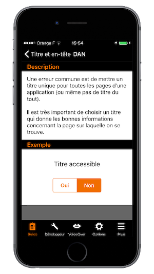
-
Each screen must have its own title allowing to know where we are in the app navigation.
-
The elements identified as headers must be declared as headers for assistive tools.
Element states #
Allow the screen reader users to access the components information, their status, their nature so they can use them without any difficulties.
Target: everyone, especially people with visual impairments.
When: during development.
If an element does not vocalize its status, nature or state, the VoiceOver user is unable to understand what is happening on the screen.
Not specifying that a view is unfolded or that we have tabs are very common examples.
Even if tabs in iOS are accessible, it is very common to customize the tabs’ look and feel, so it is the developer’s responsibility to provide the tab state and nature to the user via the corresponding accessibility attributes.
Another common instance of elements that do not vocalize their state are the expandable views.
Again, thanks to the text alternative title of the view, we can vocalize the state of the view for VoiceOver users.
To set this kind of information, use the accessibilityLabel and accessibilityTrait attributes.
Any item whose status changes when using the application must vocalize its status through its text alternative.
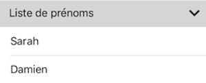
Standard components #
Improve user navigation and overall maintainability while reducing development time.
Target: everyone.
When: when choosing the libraries and during development.
Accessibility is taken into account in native components that allows the users to be in a situation or behaviour that they are already used to.
Navigation through a standard interface is then more comfortable.
It's recommended to use native components as much as possible and change their appearance if need be.
If no standard component corresponds to the need, create a dedicated component based on a standard component while keeping the navigation and accessibility consistency.
Touch target #
Improve the user experience providing a more comfortable environment.
Target: everyone, especially people with motor impairments.
When: as of design and during development.
If a touch target of a component is too small, it can prevent some users from enjoying the application and can lead to a kind of frustration that can result in uninstalling it.
Each clickable element must have a large enough touch target.
In the examples below, the black box corresponds to the size of the interactive area.
Valid example:

Invalid example:

Ghost element #
Allow screen reader users to navigate within the application without having hidden elements disturbing the reading of the current view.
Target: people with visual impairments.
When: during development.
Although invisible on the screen, some elements can be vocalized by the screen reader (elements positioned outside the visible area or hidden by other elements).
The superposition of screens is frequent when designing mobile apps but it generates very heavy accessibility problems if it is not done properly from scratch.
VoiceOver is able to read information from a view that is placed “below” another but if the user is able to interact with this view, it totally disturbs the navigation that quickly becomes impossible.
Ghost elements are very common when creating custom alert dialogs but this kind of component must be accessible.
In the example below, the custom alert dialog has a ghost element.
When VoiceOver is activated it vocalizes the content behind the current view (shown in black).
Content Control #
Allow users to keep control on the application and the screen reader user to avoid noise pollution which may affect navigation while improving a natural indexation.
Target: everyone and especially people with visual and cognitive deficiency.
When: as of design and during development.
On mobile, screen readers try to notify the user when there is a context change.
In some cases, it can give constant vocalizations, and can therefore become inaudible, or prevent any user action.
The user must control the content at any time (especially true with interactive content).
So avoid video player launching directly in full screen mode or videos starting automatically without user action or a carousel scrolling automatically for instance.
Changing content #
Provide access to changing content for the screen reader users.
Target: everyone, especially people with visual impairments.
When: during development.
When content is dynamically modified after a user action, the screen reader must notify it.
With no voice feedback, the user does not know that the content has changed.
If the content has changed dynamically after a user action, it is important that the screen reader is notified so that it triggers a vocalization (refreshing a list or a timer for instance).
To start a vocalization, a notification must be sent via the UIAccessibilityPostNotification method with the UIAccessibilityAnnouncementNotification notification in parameter and the text to vocalize.
There are several types of notification, but the two most used are:
-
UIAccessibilityLayoutChangedNotification: notify that a part of the content has changed. -
UIAccessibilityScreenChangedNotification: notify a global change.
For more technical information, please check out the corresponding section on the developer guide for iOS.
Make sure that dynamic changes are vocalized.
Horizontal scroll #
Provide a visual indication to users when there is an horizontal scrolling.
Allow screen reader users to scroll horizontally.
Target: everyone, especially people with visual impairments.
When: as of design and during development.
A horizontal scroll can be very difficult to detect if no visual feedback is displayed to help the user understand that there are several pages.
Do not hesitate to display a view to indicate a horizontal scroll (dots on UIPageControl for example).
When necessary, also add “next” and “previous” buttons.
Valid example:

Invalid example:

-
The horizontal scrolls are visually indicated.
-
It must be possible to switch pages for screen reader users.
Form #
Improve the navigation and the overall understanding of the page because form fields describing the expected input are easier to fill for visually impaired users.
Target: everyone, especially people with visual impairments.
When: as of design and during development.
Binding the form fields with their labels provides an additional vocalization allowing the user to understand what happens when filling out a form field.
We must use the accessibilityLabel attribute to associate a label to a form field.
Reading order #
Ensure logic order and coherent reading to screen reader users.
Target: people with visual impairments.
When: during development.
The reading order allows the screen reader user to get their bearings and to ensure functional coherence, it is therefore important to pay attention to it.
By default, the reading order of voice synthesis depends on the “logical” reading order, from left to right and top to bottom (in France).
However, there are some cases where the screen reader cannot determine the correct order, and uses the order of xml elements, leading to inconsistent vocalizations.
It is possible to redefine the VoiceOver reading order using the UIAccessibilityContainer.
The reading order is defined in a table an it is often useful to use the shouldGroupAccessibilityElement attribute to have a correct reading order in a sub-part of the page.
In this example, the default playback order depends completely on the implementation and on the order of element declaration.
In this case: vol+, vol-, 1, 2, 3, 4, 5, 6, 7, 8, 9, p+, p-, 0.
A more consistent reading order is 1, 2, 3, 4, 5, 6, 7, 8, 9, 0, vol +, vol-, p + p-.

For more technical information, please check out the corresponding section on the developer guide for iOS.
Traversal order (VoiceOver) is logical and coherent.
Language #
Ensure the understanding of the application text.
Target: people with visual impairments.
When: during development.
VoiceOver vocalization uses the default language of the mobile.
Sometimes some words and texts of an application are in a different language.
In order to make them properly understandable, they have to be declared in that specific language.
To change VoiceOver language pronunciation of a word or a text, use the accessibilityLanguage attribute, available via the UIAccessibility protocol.
The words and the text in a different language than the rest of the application should be vocalized in their corresponding language.
Screen orientation #
Improve a better legibility of the content.
Target: everyone, especially people with visual and/or motor impairments.
When: as of design and during development.
The screen orientation mustn't impact the access of an application content.
It's highly recommended to :
-
Implement both the portrait and the landscape modes to be easily toggled by the user if it doesn't go against some functional constraints of the application itself (
seriousgamefor instance). -
Provide for iPad screen sizes in order to facilitate reading and gestures.
-
Perfectly detailed design guideline including all the screens to be implemented with their possible orientation constraints.
-
Very accurate definition of the way the transitions between portrait and landscape modes should occur.
-
Portrait and landscape modes flawless adaptation to the content thanks to a bunch of graphic tests (very important for the
DynamicType).
Accessibility dedicated screen #
It may be pretty much easier to create a new dedicated accessibility screen in order not to challenge the current state that may contain hard graphical elements to be adapted.
However, even if it could be a brilliant idea at first sight, it's definitely not recommended to move in this direction because:
-
The screen reader is not only used by sight-impaired people but also by illiterate persons who may notice that a different screen appears when this feature is activated and then may think that different information is also provided ⟹ this situation may lead to a kind of discriminatory feeling.
-
From a practical point of view for the maintainability of the application, adding a new dedicated screen that will be used only when an accessibility feature is activated may be forgotten by the developers if some modifications are added to the initial one that doesn't deal with accessibility.
Accessibility options #
The accessibility options located in the mobile settings are all about to improve the experience of an impaired user who can be significantly helped by these options.
It's then primordial :
-
To understand perfectly each one of these options that can have an impact during the conception or the implementation periods of an application.
-
To test each appropriate option so as to be sure that its purpose is completely taken into account inside the application.
It's also our duty to listen and respect the setting for users that have it enabledWWDC 2020 - Make Your App Visually Accessible (watch the video)[...] it's also our duty to listen and respect the setting for users that have it enabled.WWDC 2020 - Make Your App Visually Accessible (watch the video)
Target: everyone.
When: as of design and during development.
The full list of these options including their purpose and their coding name is defined hereunder:
- Increase Contrast (UIAccessibilityDarkerSystemColorsEnabled): see the WWDC 2018 video for a detailed description.

- AssistiveTouch (UIAccessibilityIsAssistiveTouchRunning): displays the homonymous menu in foreground, whatever the runnning application.
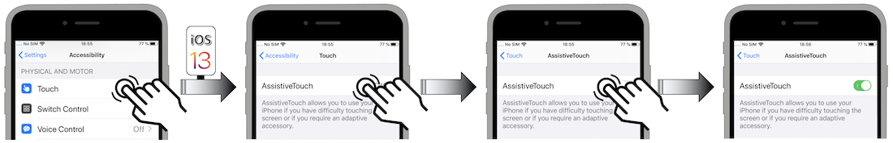
- Bold Text (UIAccessibilityIsBoldTextEnabled): see the WWDC 2018 video for a detailed description.
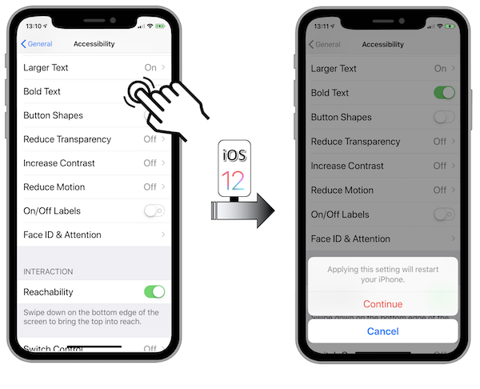
- Subtitles & Captioning (UIAccessibilityIsClosedCaptioningEnabled): displays closed captioning or subtitles when available in the
appTVorVideosapp.
- Grayscale (UIAccessibilityIsGrayscaleEnabled): makes the display more readable for colour blind people.
- Guided Access (UIAccessibilityIsGuidedAccessEnabled): restricts use of a single application.
- Invert Colours (UIAccessibilityIsInvertColorsEnabled): reduces glare and eye strain thanks to a very helpful mode for visual impaired people ⟹ this option may be deactivated within an app thanks to the property
accessibilityIgnoresInvertColors.
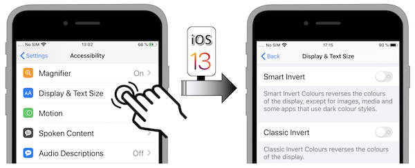
- Mono Audio (UIAccessibilityIsMonoAudioEnabled): allows a complete hearing understanding with headset on without missing a word or a sound for people who are hard of hearing or deaf in one ear.
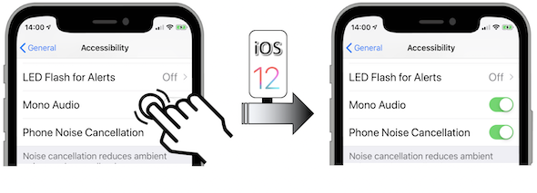
- Reduce Motion (UIAccessibilityIsReduceMotionEnabled): see the WWDC 2018 video, the WWDC 2019 and the WWDC 2020 videos for a detailed description.
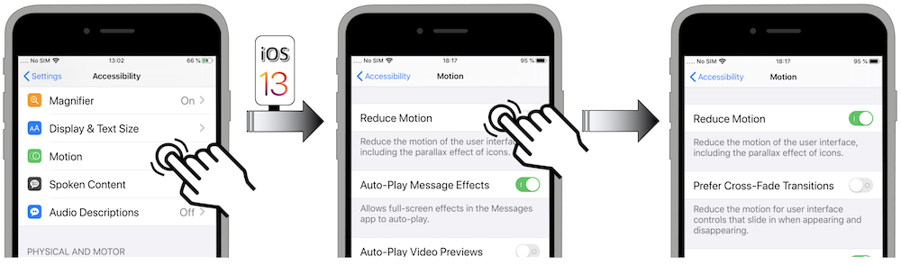

- Prefer Cross-Fade Transition (UIAccessibilityPrefersCrossFadeTranstions): see the WWDC 2019 and the WWDC 2020 videos for a detailed description.
- Reduce Transparency (UIAccessibilityIsReduceTransparencyEnabled): see the WWDC 2018 video for a detailed description.

- Shake to Undo (UIAccessibilityIsShakeToUndoEnabled): displays a menu to undo an action, preventing from holding backspace and watching all the letters disappear one by one for instance.
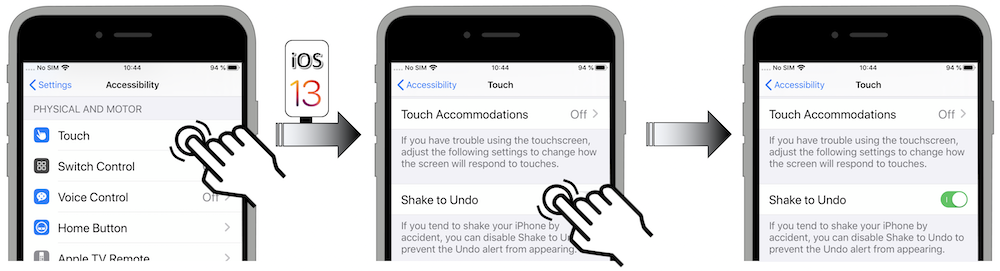
- Speak Screen (UIAccessibilityIsSpeakScreenEnabled): launches the vocalization of the screen content.
- Speak Selection (UIAccessibilityIsSpeakSelectionEnabled): displays a menu that suggests to speak the selection that fired it.
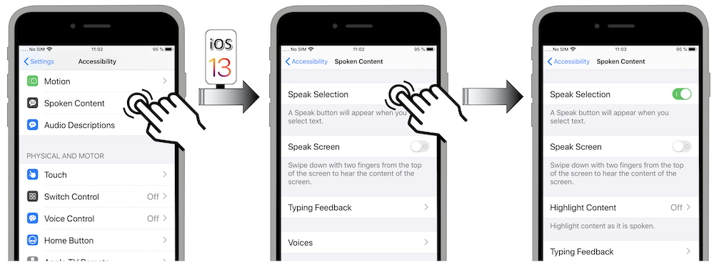
- Switch Control (UIAccessibilityIsSwitchControlRunning): activates the feature in
pointscanningmodeor initemscanningmode.
- VoiceOver (UIAccessibilityIsVoiceOverRunning): launches the screen reader.
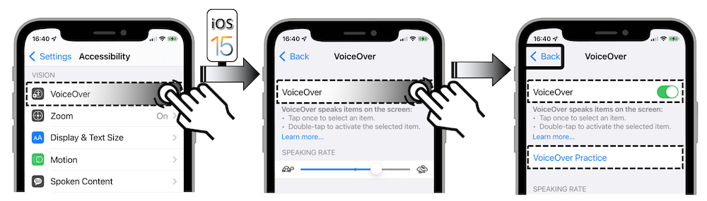
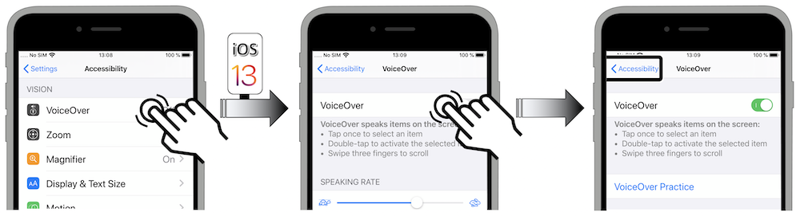
- Auto-Play Video Previews (UIAccessibilityIsVideoAutoplayEnabled): see the WWDC 2019 video for a detailed description of this iOS 13 new feature.
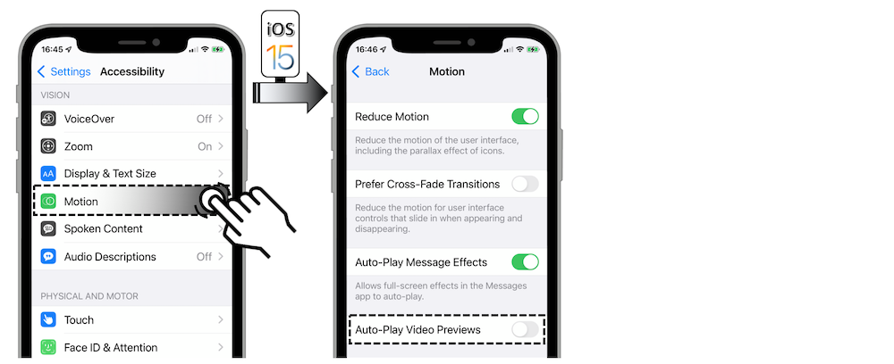
- Differentiate Without Colour (UIAccessibilityShouldDifferentiateWithoutColour): see the WWDC 2019 video for a detailed description of this iOS 13 new feature and the WWDC 2020 video for its programmatic access from iOS 14.
- On/Off Labels (UIAccessibilityIsOnOffSwitchLabelsEnabled): once activated, this option whose programmatic access is new in iOS 13 displays each button state.
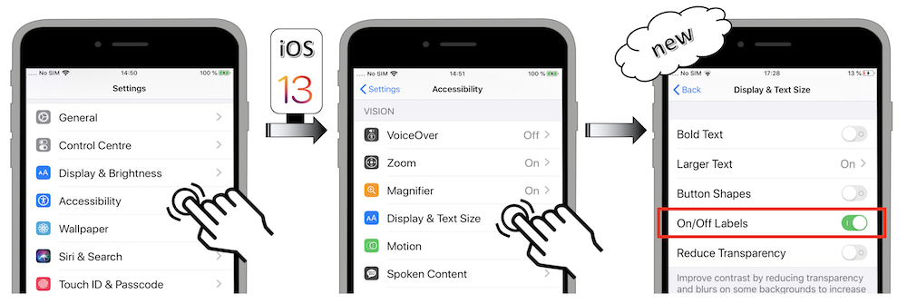
Once activated, if the accessibility option has no result in the running application, it's highly recommended to keep oneself posted of the impacted options states so as to provide the best user experience.
The full list of the accessibility options with their dedicated notification is located in the developer part of this site.
It may be particularly interesting to keep track of these options (de)activations with kind of indicators in order to have a better understanding of the users habits and to implement improvements accordingly.